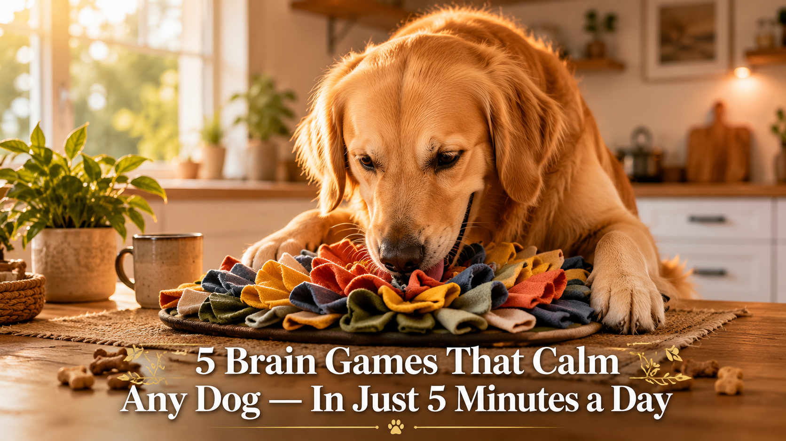

The same mental stimulation techniques that veterinary behaviorists use to reduce destructive behavior — without expensive toys, force, or hours of training.

Here's the thing most dog owners never hear from their vet: most "bad behavior" in dogs isn't a behavior problem at all — it's a boredom problem.
Chewing your shoes, barking at nothing, digging up the yard, pulling on the leash — these aren't signs of a "bad dog." They're signs of a smart dog with nothing to think about.
This guide gives you 5 brain games that take less than 5 minutes each. They're based on the same principles used in clinical animal behavior practice — and every single one is free. No toys to buy. No equipment to set up.
Let's get your dog thinking.
The mechanism is straightforward. Dogs evolved as scavengers and problem-solvers. Their brains are wired to search, hunt, figure out, and work for food. When we take away that mental work — feed them from a bowl twice a day, give them a yard to lie in — we leave a cognitive engine idling with nothing to do.
That energy doesn't just disappear. It redirects. A 2019 study from the University of Lincoln's Animal Behavior Clinic found that dogs with lower daily mental stimulation showed significantly more stress-related behaviors — excessive vocalization, destructive chewing, and restlessness.
The fix isn't more exercise. It's more thinking. A 10-minute brain game tires a dog out more than a 30-minute walk, because it engages the neural circuits they're starving to use. Veterinary behaviorists call this "cognitive enrichment" — and it's now a standard recommendation for behavior modification alongside training.
Each game below targets a different cognitive skill: scent work, impulse control, spatial reasoning, memory, and problem-solving. Together, they give your dog the full "mental workout" that keeps their brain satisfied and your furniture intact.
Why it works: Taps into your dog's 300-million-year-old foraging instinct. The olfactory engagement alone lowers heart rate and cortisol levels.
This is the gateway game. It teaches your dog to use their nose instead of their mouth to solve problems — which directly redirects destructive chewing into constructive thinking.
Why it works: Builds working memory and impulse control simultaneously. Dogs must hold information (which cup?) while resisting the urge to rush.
Made famous by cognitive researchers testing animal memory, this game has been used in university studies on canine cognition. It's simple to set up but surprisingly challenging for your dog's brain.
Why it works: A dog's nose has 300 million scent receptors (humans have 5 million). Scent work activates the parasympathetic nervous system — it literally calms them at a physiological level.
This is the single most calming game on the list. It's used in shelters to reduce anxiety in stressed dogs, and by search-and-rescue trainers to build scent drive. For your dog, it's a quiet, focused activity that ends with them more relaxed than when they started.
Why it works: Builds "frustration tolerance" — the ability to keep trying when something is hard. This is the cognitive skill most linked to calm behavior in dogs.
Dogs who chew furniture, bark at doors, or dig at carpets often have low frustration tolerance — they try something briefly, fail, and redirect to destructive behavior. This game teaches them that persistence pays off, and that "hard" doesn't mean "give up."
Why it works: This is the most cognitively demanding game on the list. It requires your dog to hold a mental representation of an object, retrieve it from memory, and execute a motor plan — essentially, thinking.
Border collies and working breeds excel at this, but any dog can learn it. It builds the same "focused attention" circuits that calm an anxious, scattered mind. Think of it as meditation for your dog — they can't be barking at the mail carrier if they're concentrating on finding "blue."
Pick one game in the morning and one in the evening. Consistency matters more than variety — doing the same game for 3-4 days builds mastery before you switch.
Mark each day you play at least one brain game with your dog. After 7 days, you'll notice a difference in their behavior — calmer evenings, less destructive chewing, better focus.
My dog isn't food-motivated. Will these games work?
Most dogs are food-motivated — they just aren't hungry enough. Play these games before meals, not after. Use higher-value treats than you'd normally give (real chicken, cheese, freeze-dried fish). If your dog truly won't work for food, substitute a favorite toy as the "treasure" in games 1, 2, and 4.
My dog is older / has arthritis. Are these safe?
All 5 games are low-impact — no jumping, no running. Game 3 ("Find It") and Game 1 (Muffin Tin) are especially gentle because they're mostly mental. For arthritic dogs, keep the muffin tin on a low table so they don't have to bend far. Skip Game 5 if your dog has vision issues that make object recognition difficult.
How long before I see a behavior change?
Most owners report calmer evenings within 3-5 days of daily brain games. Significant reduction in destructive behavior usually takes 2-3 weeks of consistency. The key word is consistency — one game per day, every day, matters more than marathon sessions on weekends.
Can I do these with a puppy?
Absolutely. Puppies are sponges for cognitive enrichment. Start with Game 1 (Muffin Tin) and Game 3 ("Find It") — they're simple enough for a 10-week-old puppy. Keep sessions to 2-3 minutes max for puppies; their attention spans are short.
My dog figured out the game in 10 seconds. Now what?
That's the point — and it's a good sign. It means their brain is working. Move to the "Level up" version listed at the bottom of each game. The goal isn't to make the game impossible — it's to keep your dog thinking at the edge of their ability.
These 5 games are just the beginning. The full Brain Training for Dogs program includes 21+ games, structured levels, and step-by-step video instruction for every exercise.
See the Full Program →